Package Version Citation
1 base 4.2.2 @base
2 cowplot 1.1.1 @cowplot
3 datawizard 0.8.0.4 @datawizard
4 easystats 0.6.0.8 @easystats
5 ggdist 3.2.0 @ggdist
6 knitr 1.41 @knitr2014; @knitr2015; @knitr2022
7 pacman 0.5.1 @pacman
8 rmarkdown 2.14 @rmarkdown2018; @rmarkdown2020; @rmarkdown2022
9 supernova 2.5.6 @supernova
10 tidyverse 1.3.2 @tidyverse
11 tigerstats 0.3.2 @tigerstatsMonsters, Models, and Normal Distributions
Princeton University
Jason Geller, PH.D.(he/him)
2023-10-01
Outline
Thinking about models
The normal distribution
Z-scores
- How to compute Z-scores
- Z-score practice
- How to compute Z-scores
Packages
What is a statistical model?
- Statistical modeling = “making models of distributions”
What is a model?
Models are simplifications of things in the real world
What is a model?
Distributions
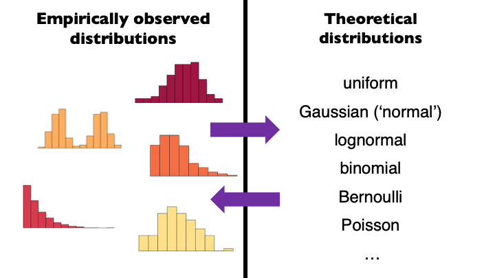
Basic Structure of a Model
\[data = model + error\]
Data
Model
Use our model to predict the value of the data for any given observation:
\[\widehat{data_i} = model_i\]
Error (predicted - observed)
\[error_i = data_i - \widehat{data_i}\]
Models as Monsters
- The Golem of Prague
- The golem was a powerful clay robot
- Brought to life by writing emet (“truth”) on its forehead
- Obeyed commands literally
- Powerful, but no wisdom
- In some versions, Rabbi Judah Loew ben Bezalel built a golem to protect
- But he lost control, causing innocent deaths

Statistical golems
- Statistical (and scientific) models are our golems
- We build them from basic parts
- They are powerful—we can use them to understand the world and make predictions
- They are animated by “truth” (data), but they themselves are neither true nor false
- The model describes the golem, not the world
- The model doesn’t describe the world or tell us what scientific conclusion to draw—that’s on us
- We need to be careful about how we build, interpret, and apply models
Choosing a Statistical Model
- Cookbook approach
- Do Smarties make us smarties?
- Take 200 7-year-olds
- Randomly assign to 2 groups
- Control: Normal breakfast
- Treatment: Normal breakfast + 1 packet of Smarties
- Outcome: Age-appropriate general reasoning test
- Randomly assign to 2 groups
- Take 200 7-year-olds
- What statistical analysis do I run?
- Do Smarties make us smarties?

Choosing a Statistical Model
Cookbook approach
Every one of these tests is the same model
The general linear model (GLM)
- The cookbook approach makes it hard to think clearly about relationship between our question and the statistics
The General Linear Model
General mathematical framework
Regression all the way down
Highly flexible
- Can fit qualitative (categorical) and quantitative predictors
Easy to interpret
Helps understand interrelatedness to other models
Easy to build to more complex models
The General Linear Model
Modeling comparison approach
Think in terms of models and not tests
Model is determined by question, not data
What do alternative models say about the world?
Let’s build a model for this experiment
A simple model
- General reasoning scores
# The Data
control_group= c(92, 97, 123, 101, 102, 126, 107, 81, 90, 93, 118, 105, 106, 102, 92, 127, 107, 71, 111, 93, 84, 97, 85, 89, 91, 75, 113, 102, 83, 119, 106, 96, 113, 113, 112, 110, 108, 99, 95, 94, 90, 97, 81, 133, 118, 83, 94, 93, 112, 99, 104, 100, 99, 121, 97, 123, 77, 109, 102, 103, 106, 92, 95, 85, 84, 105, 107, 101, 114, 131, 93, 65, 115, 89, 90, 115, 96, 82, 103, 98, 100, 106, 94, 110, 97, 105, 116, 107, 95, 117, 115, 108, 104, 91, 120, 91, 133, 123, 96, 85)
treat_group= c(99, 114, 106, 105, 96, 109, 98, 85, 104, 124, 101, 119, 86, 109, 118, 115, 112, 100, 97, 95, 112, 96, 103, 106, 138, 100, 114, 111, 96, 109, 132, 117, 111, 104, 79, 127, 88, 121, 139, 88, 121, 106, 86, 87, 86, 102, 88, 120, 142, 91, 122, 122, 115, 95, 108, 106, 118, 104, 125, 104, 126, 94, 91, 159, 104, 114, 120, 103, 118, 116, 107, 111, 109, 142, 99, 94, 111, 115, 117, 103, 94, 129, 105, 97, 106, 107, 127, 111, 121, 103, 113, 105, 111, 97, 90, 140, 119, 91, 101, 92)
df <- tibble(treatment=treat_group, control=control_group)
df_candy <- df %>%
pivot_longer(treatment:control, names_to = "cond", values_to = "values")A Simple Model: Data
| Scores |
|---|
| 101 |
| 114 |
| 131 |
| 9 |
Building a Model - Notation
Small Roman letters
Individual observed data points
\(y_1\), \(y_2\), \(y_3\), \(y_4\), …, \(y_n\)
- The scores for person 1, person 2, person 3, etc.
\(y_i\)
- The score for the “ith” person
Big Roman letters
A “random variable”
The model for data we could observe, but haven’t yet
\(Y_1\)
- The model for person 1
- The yet-to-be-observed score of person 1
Building a Model - Notation
Greek letters
Population parameters
Unobservable parameters
μ
mu
- “mew” - Used to describe means
σ
Sigma
Used to describe a standard deviation
Building a Model - Notation
Roman letters
Sample specific statistics
\(\bar{X}\) - sample mean
s - standard deviation from the sample
Data estimates
\(b_0\)
\(e\)
A simple model
- Null or empty model
\[ Y_i = \beta_0 + \epsilon \]
\[ Y_i= b_0 + e \]
- Makes the same prediction for each observation
Figuring out \(b_0\)
- Goal of any model is to find an estimator that minimizes the error
- How we define error will determine the best estimator
Types of Errors
Sum of errors (residuals)
- The sum of the differences between observed values and predicted values. In an ideal case with no bias, this would be zero.
\[SE = \sum_{i=1}^{n} (y_i - \hat{y}_i)\]
Sum of absolute errors
- Measures the total absolute difference between observed and predicted values. It gives a sense of the average magnitude of errors without considering direction
\[SAE = \sum_{i=1}^{n} |y_i - \hat{y}_i|\]
- Median is best estimate for \(b_0\)
Sum of squares (SS)
This measures the total squared difference between observed and predicted values
Most commonly used in regression analysis (what we will be using)
\[SS = \sum_{i=1}^{n} (y_i - \hat{y}_i)^2\]
The mean
Mean is the best estimator of \(b_0\)
\[\frac{1}{n} \sum_{i=i}^{n} x_{i}\]
Mean has really nice proprieties: \[SE = \sum_{i=1}^{n} (y_i - \hat{y}_i)\]
- SSR minimized at mean
SSR minimized at mean
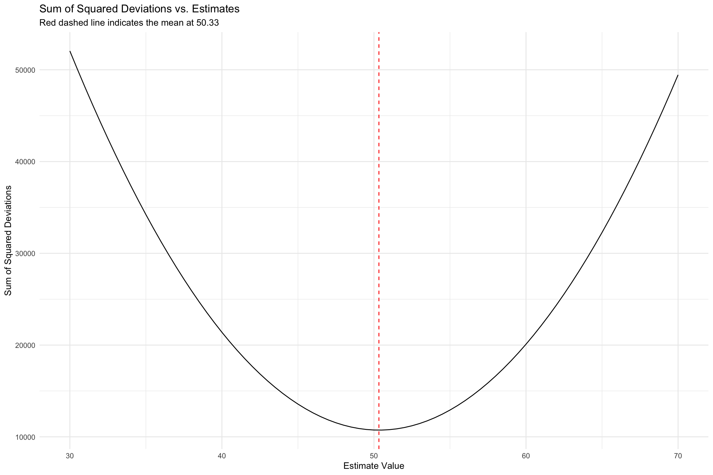Describing error
We should have some overall description of the accuracy of model’s predictions
SSR
Standard deviation
\[ s^2 = \text{MSE} = \frac{1}{n-p} \sum_{i=1}^{n} (Y_i - \hat{Y}_i)^2 \]
\[ \text{SD} = \sqrt{\text{MSE}} \]
Statistical Modeling: An Example
- Let’s look at general reasoning scores
Building a Model - Concrete example
\[ \hat{scores} = b_0 + e \]
- What is the overall mean of the dataset?
Building a Model - Concrete example
lmfunction in R can fit an empty model
Call:
lm(formula = values ~ NULL, data = df_candy)
Coefficients:
(Intercept)
104.9 - \(b_0\) = Intercept = Estimate = Mean
Building a Model - Concrete example
broomis a helper package that provides us with lots of useful functions to get things like residuals, predicted values, etc)
# A tibble: 200 × 7
values .fitted .resid .hat .sigma .cooksd .std.resid
<dbl> <dbl> <dbl> <dbl> <dbl> <dbl> <dbl>
1 99 105. -5.92 0.00500 14.6 0.000839 -0.409
2 92 105. -12.9 0.005 14.5 0.00399 -0.891
3 114 105. 9.08 0.005 14.6 0.00197 0.626
4 97 105. -7.92 0.005 14.6 0.00150 -0.547
5 106 105. 1.08 0.005 14.6 0.0000276 0.0741
6 123 105. 18.1 0.005 14.5 0.00781 1.25
7 105 105. 0.0750 0.005 14.6 0.000000134 0.00517
8 101 105. -3.92 0.005 14.6 0.000368 -0.271
9 96 105. -8.92 0.005 14.6 0.00190 -0.616
10 102 105. -2.92 0.005 14.6 0.000205 -0.202
# ℹ 190 more rowsBuilding a model - Concrete example
- Can get SS a few different ways
Building a model - Concrete
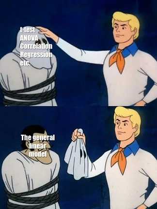Building a model - Concrete example
Call:
aov(formula = lm(null_model))
Terms:
Residuals
Sum of Squares 42043.87
Deg. of Freedom 199
Residual standard error: 14.53533 Analysis of Variance Table (Type III SS)
Model: values ~ NULL
SS df MS F PRE p
----- --------------- | --------- --- ------- --- --- ---
Model (error reduced) | --- --- --- --- --- ---
Error (from model) | --- --- --- --- --- ---
----- --------------- | --------- --- ------- --- --- ---
Total (empty model) | 42043.875 199 211.276 Building a model - concrete example
- Mean squared error (MSE)
null_model %>%
broom::augment()%>%
summarise(SS=(sum(.resid^2)), MSE_v=SS/(199), MSE_sd= sqrt(MSE_v))# A tibble: 1 × 3
SS MSE_v MSE_sd
<dbl> <dbl> <dbl>
1 42044. 211. 14.5 Analysis of Variance Table (Type III SS)
Model: values ~ NULL
SS df MS F PRE p
----- --------------- | --------- --- ------- --- --- ---
Model (error reduced) | --- --- --- --- --- ---
Error (from model) | --- --- --- --- --- ---
----- --------------- | --------- --- ------- --- --- ---
Total (empty model) | 42043.875 199 211.276 Building a model - Concrete example
- Predictions from the model
A More Complex Model
- Do you think the empty model is a good model?
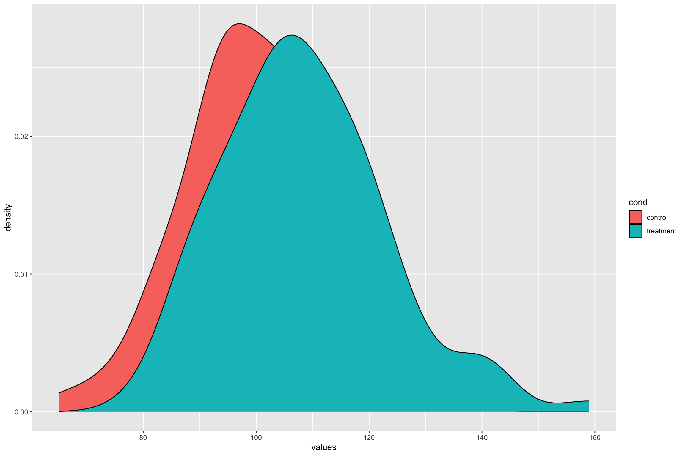
What Makes a Model “Good”
We want it to describe our data well
We want it to generalize to new datasets
- We want error to be as small as possible
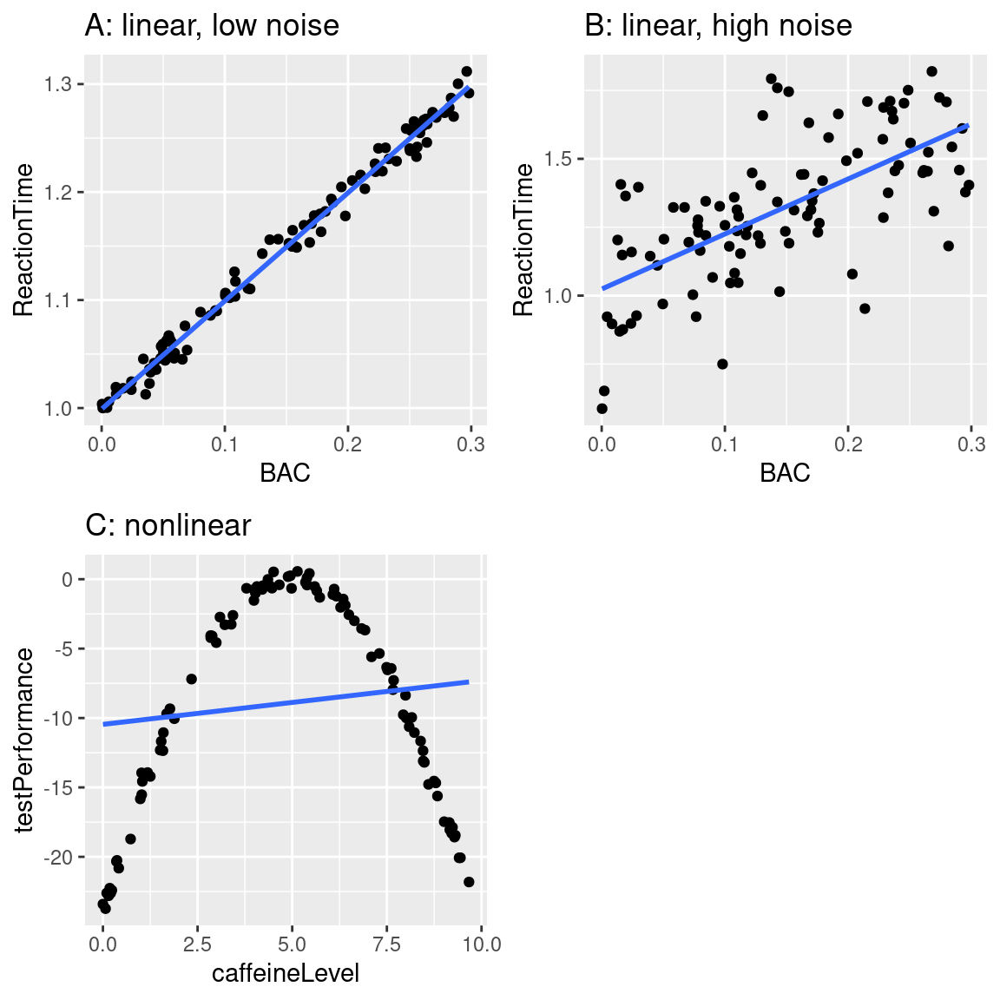
Can a Model Be Too Good?
Yes!
Overfitting
- A model with little to no error will not generalize to new datasets

Normal distribution
Normal distribution
- Error in linear models is assumed to distributed as normal
\[ \epsilon \sim N(\mu, \sigma) \]
Sometimes called a Gaussian distribution
If we assume a variable is at least normally distributed can make many inferences!
Most of the statistical models assume normal distribution
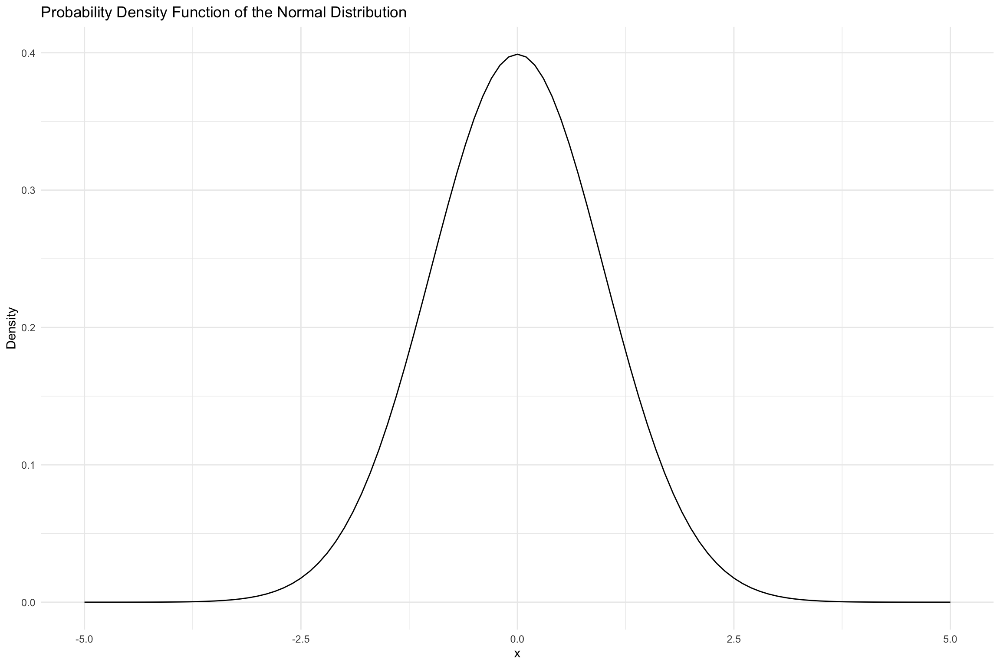
Normal distribution
Normal(μ, σ)
Parameters:
\(\mu\) = Mean
\(\sigma\) Standard deviation
- On average, how far is each point from the mean (spread)?
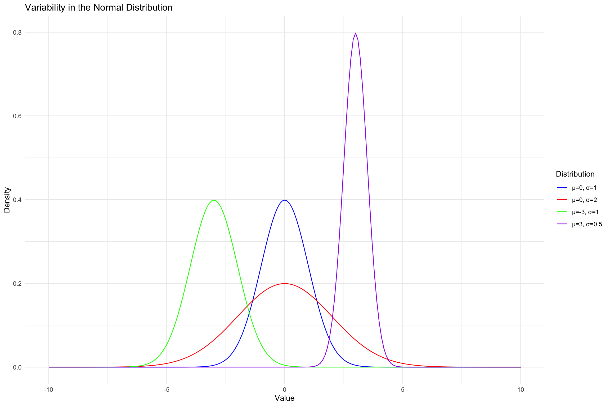
Building a Model - Normal Distribution
Properties of a normal distribution
- Shape
- Unimodal
- Symmetric
- Asymptotic
- Shape
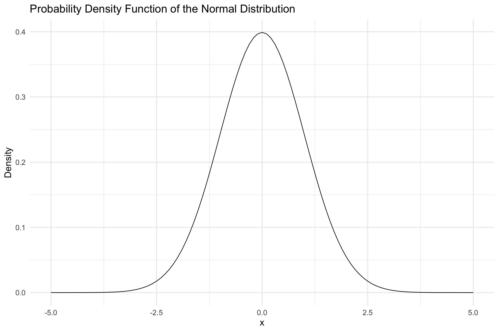
Building a Model - Normal Distribution
- The PDF of a normal distribution is given by:
\(f(x) = \frac{1}{\sqrt{2\pi \sigma}}\exp\left[-\frac{(x-\mu)^2}{2\sigma^2}\right]\)
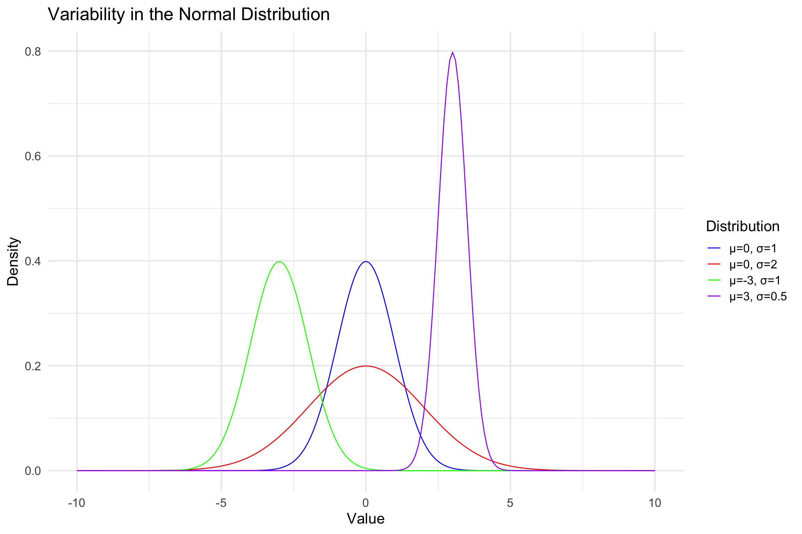
Normal Distribution
- Skew
Normal Distribution
- Peakedness
Normal Distribution
\(Y_1\) ∼ \(N(\mu, \sigma)\)
\(Y_1\) ∼ Normal(100, 15)
\(Y_2\) ∼ Normal(100, 15)
\(Y_n\) ∼ Normal(100, 15)
Or for all observations,
- \(Y_i\) ∼ Normal(100, 15)
Normal Distribution
Everyone’s score comes from the same distribution
The average score should be around 100
Scores should be spread out by 15
Scores should follow bell-shaped curve
Probability and Standard Normal Distribution: Z-Scores
\[Z(x) = \frac{x - \mu}{\sigma}\]
- Z-score /standard score tells us how far away any data point is from the mean, in units of standard deviation
Standard Normal Distribution
- Properties of standard normal
- Empirical Rule
- 68.27% of the data falls within one standard deviation (sigma) of the mean
- 95.45% falls within two sigma
- 99.73% falls within three sigma
- Empirical Rule
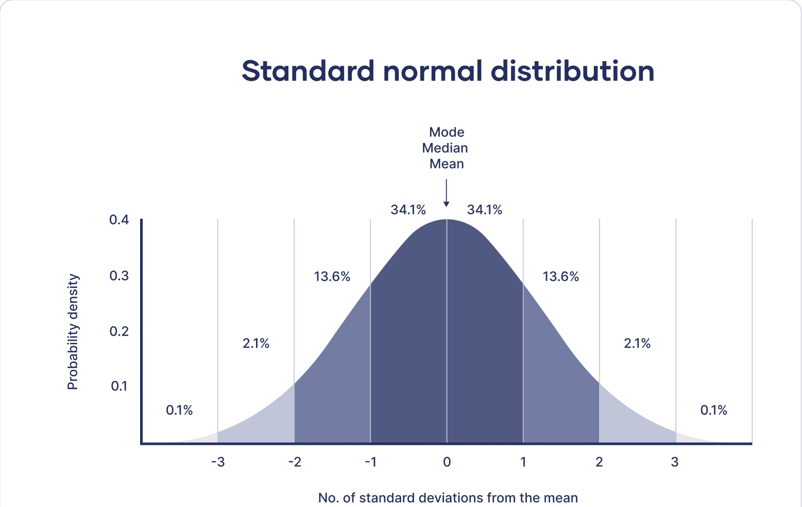
Z tables
- NO MORE TABLES

Using R
dnorm(): Z-score to density (height) (PDF)pnorm(): Z-score to area (CDF)qnorm(): area to Z-score
Using R
pnormfunction: Z-score to area (CDF)
\[ P(X <= x) \]
If you calculated a Z-score you can find the probability of a Z-score less than or equal (lower.tail=TRUE) or greater than (lower.tail=FALSE)
Using R: pnorm
- What is the z-score?
- What percentage is below this z-score?
- Above
Using R: pnorm
- Calculate z-score
- Percentage below IQ score of 55?
- Percentage above IQ score of 55?
Using R: pnorm
- Percentage between IQ score of 120 and 159?
Package PnormGC
- Percentage between IQ score of 120 and 159?
Package PnormGC
What about \(P(X \leq 69)\)
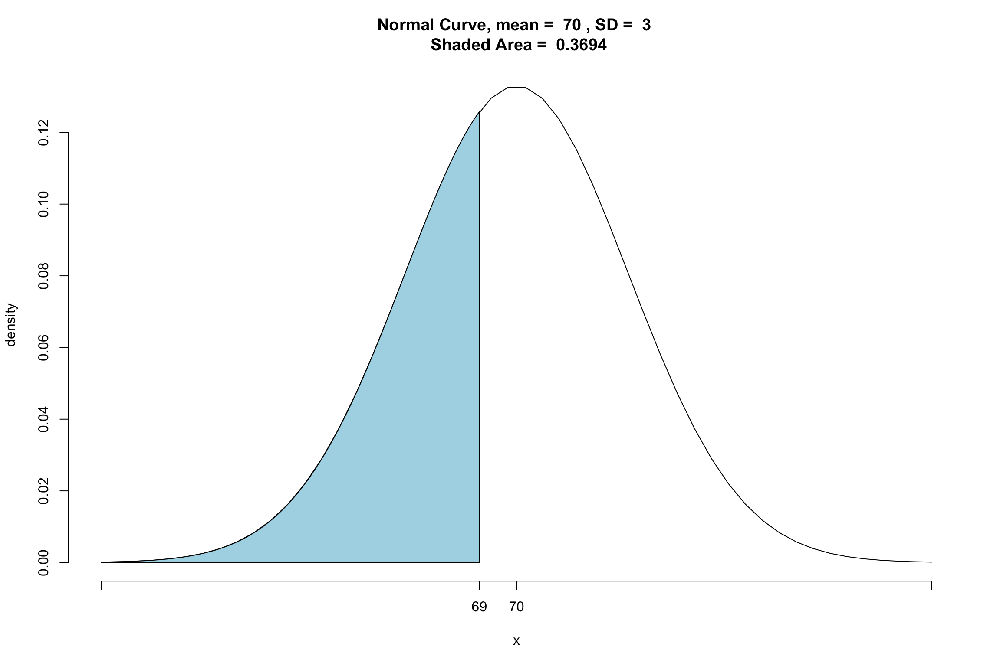Using R: qnorm
qnorm(): area to z-scores
What is the score for which 5% lies above?
Practice pnorm
Suppose that BMI measures for men age 60 in a Heart Study population is normally distributed with a mean (μ) = 29 and standard deviation (σ) = 6. You are asked to compute the probability that a 60 year old man in this population will have a BMI less than 30.
What is the z-score?
What is the probability a 60 year old man in this population will have a BMI between 30 and 40?
Practice: qnorm
Suppose that SAT scores are normally distributed, and that the mean SAT score is 1000, and the standard deviation of all SAT scores is 100. How high must you score so that only 10% of the population scores higher than you?
Z-scores in practice
- Standardization
- Scaling your measures so they are are comparable
- Does not change anything about the data!
Standardized Scores
A standardized score is a Z-score that has been transformed to have a \(\mu\) and \(\sigma\) different from standard normal
IQ
- \(\mu = 100\) \(\sigma = 15\)
SAT
- \(\mu =500\) \(\sigma = 100\)
T-score
- \(\mu = 50\) \(\sigma = 10\)
New score = new sd(Z) + New mean
PSY 503: Foundations of Statistics in Psychology